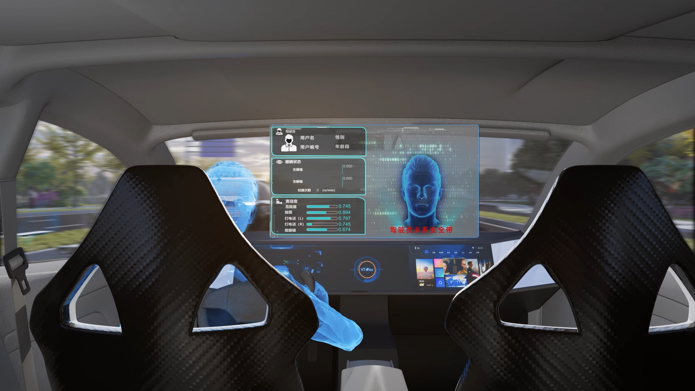
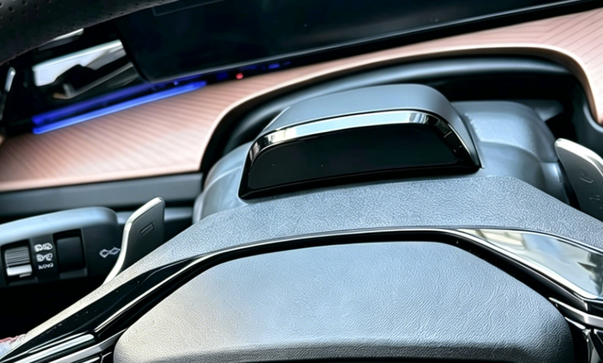
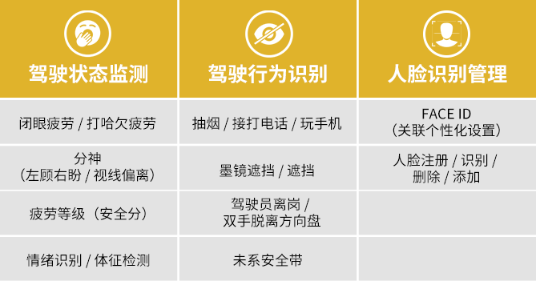
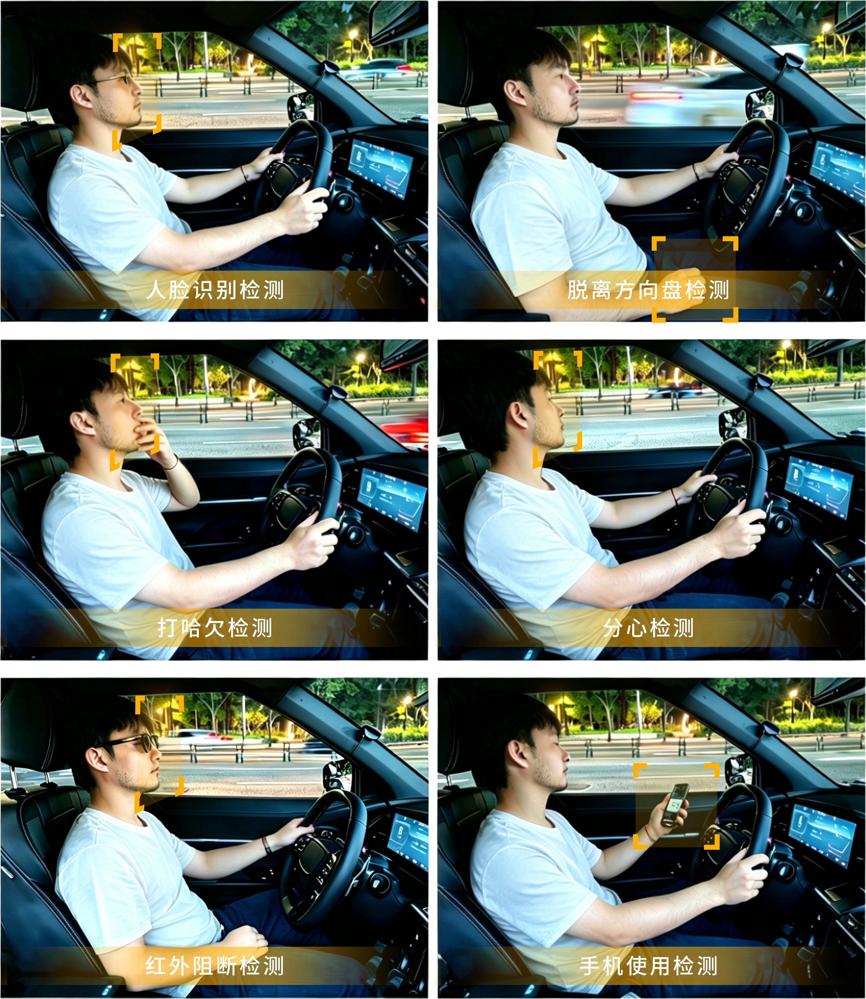

2026年6月1日，公安部发布的《机动车驾驶人疲劳驾驶认定规则》（GA/T2372-2026（以下简称“新规”）将在全国统一实施，新规对驾驶员疲劳状态的认定标准更加细致，这意味着行业合规升级、搭载分级监测将成为主流趋势。驾驶状态监测迈入“精细化”时代，状态提示功能愈加受到重视，具备疲劳分级提示功能的系统将成为市场优选。
在欧洲等海外市场，DMS早已成为新车准入门槛。寅家科技VT-DMS驾驶员监控系统契合新规趋势，对标欧盟ADDW/DDAW等功能导向先行布局，可实现多维度驾驶状态识别、疲劳层级划分及适时提醒功能，为行车状态监测提供专业配套支持。

VT-DMS，为驾驶安全提供分级预警支持
寅家科技VT-DMS驾驶员监控系统，通过实时检测驾驶员的面部状态、视线角度、肢体特征等行为，结合驾驶时间、方向盘操控状态等，对驾驶员的警觉性进行评估分级，并在需要时通过人机界面向驾驶员提供视觉和声音警告。

顺应全球法规趋势，打造适配性方案
此前，搭载寅家科技VT-DMS驾驶员监控系统的国际知名品牌汽车，已在西班牙权威认证机构依据欧盟 (EU) 2023/2590号法规的实施细则，完成了(EU)2019/2144（GSR 2.0）法规相关标准的认证。VT-DMS产品符合高级驾驶员分心警告系统（ADDW）、驾驶员疲劳和注意力警告系统（DDAW）以及网络安全（Cybersecurity）等多项功能要求。
不止疲劳分级，覆盖多类驾驶行为监测

*具体功能和参数可根据客户需求定制
不止于硬件，更是软硬一体的解决方案
摄像头模组：200万像素 | 30fps | 红外940nm夜视增强
检测精度：精准识别闭眼/哈欠频率/头部姿态
环境适应性：工作温度-40℃~+85℃ | 防护等级IP 52
个性化功能：支持Face ID个性化登录 | 红外阻断型墨镜遮挡 | 吸烟/打电话/离岗行为检测

伴随新规落地与全球汽车法规持续完善，驾驶员状态监测已成车载配置发展大势。VT-DMS将以成熟的软硬件配套能力，通过持续优化智能出行技术和产品，为驾驶员出行提供状态分级与适时提醒参考，助力车企从容应对新规趋势，为全球汽车安全领域贡献更多力量。
*声明：VT-DMS系统为辅助提示功能，不可替代驾驶员的主观判断与安全驾驶行为。